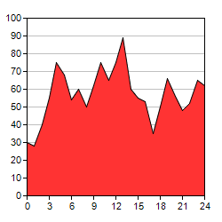

This example demonstrates the basic steps in creating area charts.
- Create an XYChart object using XYChart.XYChart.
- Specify the plot area of the chart using XYChart.setPlotArea. The plot area is the rectangle bounded by the x and y axes. You should leave some margin on the outside of the plot area for axis labels, chart titles, etc.
- Specify the labels on the x-axis using Axis.setLabels.
- An area chart may contain many points and therefore many x-axis labels. In this example, Axis.setLabelStep is used to specify showing only a subset of the labels on the x-axis to avoid over-crowding.
- Add an area layer and specify the data for the area using XYChart.addAreaLayer.
- Pass the chart to the CChartViewer for display using CChartViewer.setChart (MFC version) or QChartViewer.setChart (Qt version), or generate the chart as an image file using BaseChart.makeChart (Command Line version).
- Generate tool tips for the chart using BaseChart.getHTMLImageMap. (MFC/Qt version)
The following is the command line version of the code in "cppdemo/simplearea". The MFC version of the code is in "mfcdemo/mfcdemo". The Qt Widgets version of the code is in "qtdemo/qtdemo". The QML/Qt Quick version of the code is in "qmldemo/qmldemo".
#include "chartdir.h"
int main(int argc, char *argv[])
{
// The data for the area chart
double data[] = {30, 28, 40, 55, 75, 68, 54, 60, 50, 62, 75, 65, 75, 89, 60, 55, 53, 35, 50, 66,
56, 48, 52, 65, 62};
const int data_size = (int)(sizeof(data)/sizeof(*data));
// The labels for the area chart
const char* labels[] = {"0", "1", "2", "3", "4", "5", "6", "7", "8", "9", "10", "11", "12",
"13", "14", "15", "16", "17", "18", "19", "20", "21", "22", "23", "24"};
const int labels_size = (int)(sizeof(labels)/sizeof(*labels));
// Create a XYChart object of size 250 x 250 pixels
XYChart* c = new XYChart(250, 250);
// Set the plotarea at (30, 20) and of size 200 x 200 pixels
c->setPlotArea(30, 20, 200, 200);
// Add an area chart layer using the given data
c->addAreaLayer(DoubleArray(data, data_size));
// Set the labels on the x axis.
c->xAxis()->setLabels(StringArray(labels, labels_size));
// Display 1 out of 3 labels on the x-axis.
c->xAxis()->setLabelStep(3);
// Output the chart
c->makeChart("simplearea.png");
//free up resources
delete c;
return 0;
}
© 2023 Advanced Software Engineering Limited. All rights reserved.